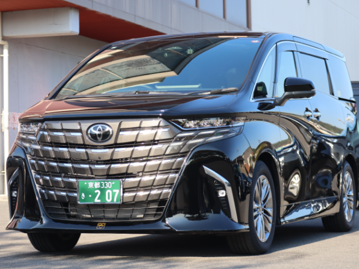
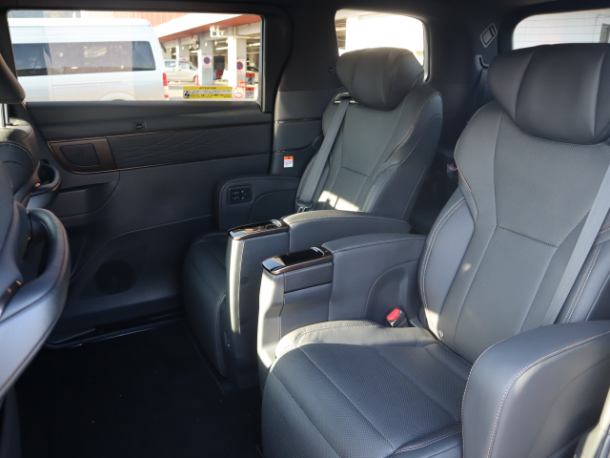
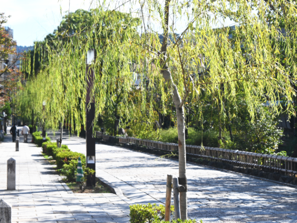
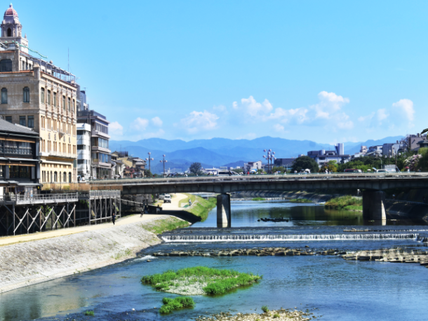
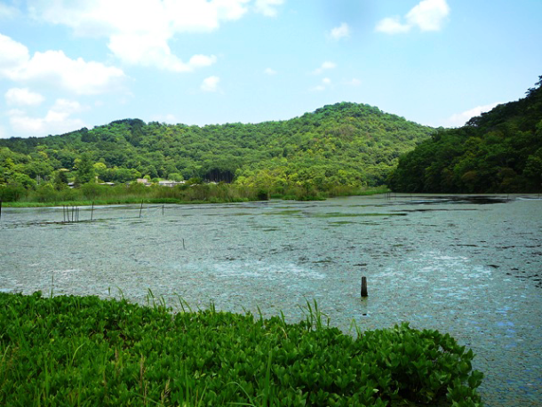
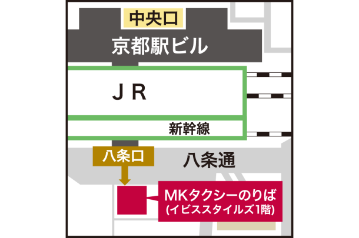

最新の情報は 公式サイトのツアーページ をご覧ください。
歩かなくても京都は楽しい。ベテランドライバーと巡る 京都車窓観光
本ツアーの募集は終了いたしました
貸切で再現できる場合もございますのでご相談ください。お問合せフォームはこちら
＜MKトラベルTOPはこちら▶＞
＜おすすめツアーはこちら▶＞
| 乗合料金表（最少催行人数4名） | |
| 1時間半コース ①ザ・京都を感じる車窓コース ②ガイドブックに載っていない京都 | 4,500円(税込) |
| 2時間コース ③京都は話がおもしろい。 | 5,000円(税込) |
1名様から受付可能！貸切料金表はこちら
夏のお出かけは暑いし疲れるのが当たり前…そう諦めていませんか？
MKトラベルがほとんどの時間を車内で過ごすツアーを企画いたしました。
暑い夏も車の中にいればひんやり涼しく快適。もちろん運転はプロにおまかせ！
せわしない移動もなく、のんびり観光したい時やご高齢の方へのプレゼントにも最適です♪
車窓からの景色をお楽しみいただくツアーのため、暑い外で過ごす時間は最低限！
MKドライバーならではの案内とともに、京都の魅力を再発見する特別なタクシーツアーです。
| おすすめポイント🌟 |
| ・京都を知り尽くしたMKドライバーが、歴史や地元ならではの話を交えながらご案内 ・ガイドブックには載っていない京都の魅力に出会えます ・ほとんどが車窓観光！涼しい車内から京都の風景を楽しめるので、真夏でも快適♪ ・京都駅八条口発着だからアクセス抜群！ ・観光の合間や到着日・出発日にも気軽にご参加いただけます ・短時間で京都を満喫！半日観光や空き時間の有効活用にもおすすめです ・他のお客様と一緒だと気が引ける…という方のために貸切プランをご用意いたしました |
-

快適なタクシー車両（イメージ）
-

空調の効いた車内（イメージ）
コースを3種類ご用意しております！
クリックして各コースをチェック！
①ザ・京都を感じる車窓ツアー【王道の観光地を巡る1時間半コース】▶
②ガイドブックに載っていない京都【ベテランの案内が光る1時間半コース】▶
③京都は話が面白い。【知られざる伝説や怪異に触れる2時間コース】▶
①ザ・京都を感じる車窓コース ～京の名景を巡る王道ドライブ～
【1時間半コース】
京都と聞いて思い浮かべる風景をぎゅっと凝縮。五重塔、世界遺産、城郭、朱色の大鳥居、巨大な山門、石畳の町並みなど、京都らしい風景を効率よく巡ります。
初めて京都を訪れる方にもおすすめの王道コースです。
| 日時 | 場所 |
| 9:00 | 京都駅八条口MKタクシーのりば（集合・出発） |
| ↓ | ・東寺五重塔 |
| 10:30頃 | 京都駅八条口（解散） |

祇園白川（自由散策あり）
②ガイドブックに載っていない京都 ～京の物語を巡る雑学ドライブ～
【1時間半コース】
京都には千年以上の歴史の中で育まれた数々の物語があります。
京都を知り尽くしたMKのベテランドライバーが、歴史や文化、地元ならではの逸話を交えながらご案内。
なぜ京都のシンボルは五重塔なのか、鴨川でカップルが等間隔に座る理由など、「へぇ～！」「知らなかった！」と思わず誰かに話したくなる京都雑学をお楽しみください。
| 日時 | 場所 |
| 9：00 | 京都駅八条口 MKタクシーのりば（集合・出発） |
| ↓ | ・東寺 ・西本願寺 ・二条城 ・京都御苑 ・同志社大学 ・下鴨神社・糺の森（下車15分程度） ・鴨川 ・祇園 ・六角堂 など |
| 10：30頃 | 京都駅八条口（解散） |

鴨川（よく等間隔で人が並んでいます）
③京都は話がおもしろい。～伝説と歴史を巡るミステリードライブ～
【2時間コース】
京都には千年以上にわたり語り継がれてきた伝説や不思議な物語が数多く残されています。
陰陽師・安倍晴明ゆかりの地や、歴史の舞台となった場所…
古くから怪異や伝説が語られる名所を巡りながら、ベテランドライバーが知られざる京都をご案内。
歴史好きの方にもおすすめの、大人の京都ミステリーツアーです。
| 日時 | 場所 |
| 9：00 | 京都駅八条口 MKタクシーのりば（集合・出発） |
| ↓ | ・一条戻橋 ・晴明神社 ・船岡山 ・深泥池 ・下鴨神社・糺の森 ・祇園・八坂周辺 など |
| 11：00頃 | 京都駅八条口（解散） |

深泥池（国の天然記念物）
集合場所

八条西口前（横断歩道渡ってすぐ）
【MKトラベルLINE公式アカウント】
MKトラベルの新規ツアー情報をLINEでお届けいたします

【各SNSでも京都の情報やツアー情報をお届けしています】


旅行条件
| ツアー番号 | SS78MK |
| 出発地 | 京都市 |
| 添乗員／ガイド | なし（乗務員がその業務を代行いたします）／なし |
| 食事 | なし |
| 最少催行人数 | 4名 |
お申込みについてのご注意
※最少催行人数は4名様です。最少催行人員に満たない場合は、旅行の実施を取りやめることがあります。出発の5日前にその旨をご連絡し、お客様から当社がお預かりしている旅行費用の全額をお返しいたします。
※旅行条件・旅行代金は、2026年6月1日現在を基準としています。
※行程および帰着時間は交通事情などにより変更になる場合があります。
※お申込みの前に弊社の募集型企画旅行規約をご確認ください。
よくある質問
Q.1名ですが、申し込みできますか？
A.はい。お一人から参加可能です。貸切も1名から承っております。
Q.お手洗いへの立ち寄りはできますか？また、休憩時間はありますか？
A.休憩時間などはとくにございませんので、「お手洗いへ行きたい」「停車した状態で少し休みたい」などございましたら都度ドライバーにお申し付けください。
Q.8名以上で貸切できますか？
A.大人数での参加をご希望の方は事前にご相談ください。お問合せフォームはこちら
本ツアーの募集は終了いたしました
貸切で再現できる場合もございますのでご相談ください。お問合せフォームはこちら
＜MKトラベルTOPはこちら▶＞
＜おすすめツアーはこちら▶＞
・クレジットカード決済
・コンビニ決済（※お電話にてご予約お願いいたします）
お支払方法詳細はこちら
お客様のご都合でご予約をキャンセルされる場合は、すみやかに下記お問合せ先までご連絡ください。
◆コンビニ決済をご選択の場合、支払期限を過ぎますとご予約は自動的にキャンセルとなりますのでご注意ください。
◆お客様のご都合でご予約をキャンセルされた場合、下記キャンセル料を申し受けます。お支払いいただきました旅行代金よりキャンセル料を相殺して、お客様へご返金させていただきます。
【店頭決済／銀行振込／コンビニ決済の場合】
お客様のご指定の口座へご返金させていただきます。
【クレジットカード決済の場合】
ご利用のクレジットカード会社を経由して、ご返金させていただきます。締め日のタイミングによっては一度請求が発生し、その後返金処理となります。キャンセル料
11日目に当たる日以前
無料
10日目に当たる日以前
20%
7日目に当たる日以前
30%
旅行開始日の前日
40%
旅行開始日の当日
50%
旅行開始後又は無連絡
100%